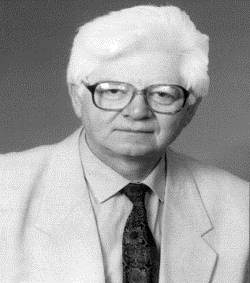

Oktay Sinanoğlu
Ünlü sanatçı Esin Afşar'ın ağabeyi olan Oktay Sinanoğlu, 25 Şubat 1935 tarihinde İtalya'nın Bari kentinde dünyaya geldi. 1939 yılında İtalya'nın II. Dünya Savaşı'na girmesi üzerine ailesiyle birlikte Türkiye'ye döndü. 1953'de TED Ankara Koleji'nden birincilikle mezun oldu. Aynı yıl okul bursuyla ABD'ye gitti. 1956 yılında Kaliforniya Üniversitesi'nin kimya mühendisliği bölümünü bitirdi. Ertesi yıl MIT'de yüksek lisansını tamamladı ve Sloan Ödülü'nü kazandı. Doçentlik tezini tamamlamasının ardından Berkeley'de kuramsal kimya alanında doktorasını tamamladı.
21 Aralık 1963 tarihinde Yale Üniversitesi'nde tanıştığı Paula Armbruster ile evlendi. Daha sonra Dilek Sinanoğlu ile ikinci evliliğini yaptı. Bu evliliğinden ikiz çocukları oldu.
Oktay Sinanoğlu, 19 Nisan 2015 tarihinde ABD'nin Florida eyaletinde hayatını kaybetti. Karacaahmet Mezarlığı'nda annesi Rüveyde Sinanoğlu ile kız kardeşi Esin Afşar'ın yanına gömüldü.
Akademik hayatı
Oktay Sinanoğlu, 1960 yılında Yale Üniversitesi'nde öğretim üyesi oldu. 1 Temmuz 1963'te kimya alanında tam profesörlük unvanı aldı.
1964'te Yale Üniversitesi'nde teorik kimya bölümünü kurdu. Yale'deki görevi boyunca, "Atom ve Moleküllerin Çok-Elektron Teorisi" (1961), "Çözgeniter Kuramı" (1964), "Kimyasal Tepkime Mekanizmaları Kuramı" (1974), "Mikrotermodinamik"(1981) ve "Değerlik Kabuğu Etkileşim Kuramı" (1983) çalışmalarını gerçekleştirdi. 1988 yılında, laboratuvar ortamında birleştirilecek olan kimyasalların, birleştirmenin ardından nasıl tepki vereceklerini öngörebilmek amacıyla, kendi geliştirdiği matematik teorilerine dayanan devrimsel bir yöntem olan ve "Sinanoğlu İndirgemesi" olarak adlandırılan yöntemini yayınladı. Sinanoğlu, Yale'de 37 yıl çalıştıktan sonra, 1997'de emekli oldu.
Yale'de çalıştığı süre boyunca, çeşitli Türk üniversitelerine, TÜBİTAK'a ve Japan Society for the Promotion of Science'ye danışmanlık yaptı. 1962 yılında Orta Doğu Teknik Üniversitesi mütevelli heyeti Oktay Sinanoğlu'na danışman profesör unvanı verdi. 1975 yılında çıkartılan özel kanunla devlet tarafından kendisine Cumhuriyet Profesörü unvanı verildi.
1966 yılında Kimya dalında "TÜBİTAK Bilim Ödülü"nü, 1973'te Kimya dalında "Alexander von Humboldt Research Award"ı ve 1975'te "International Outstanding Scientist Award of Japan"ı kazandı. 1973'te T.C. Özel Elçisi olarak Japonya'ya gönderildi. Sinanoğlu ayrıca Nobel ödülü için iki defa aday gösterildi.
1997 yılında Yale'den emekli olmasının ardından Yıldız Teknik Üniversitesi'nde profesör olarak çalışmaya başladı. 2002'ye kadar Yıldız Teknik Üniversitesi Kimya Bölümü'nde çalışmaya devam etti.
Sinanoğlu birçok bilimsel kitap ve makale yazdı. Ayrıca "Hedef Türkiye" ve "Bye Bye Türkçe" (2005) gibi eserlere de imza attı. Yaşamı boyunca Kuantum mekaniğine birçok katkıda bulundu. P.A.M. Dirac'in de üzerinde çalıştığı ancak çözemediği "Kuantum mekaniğinde Hilbert uzayının topolojisi ve içerdiği yüksek simetrileri" problemini çözdü..
Oktay Sinanoğlu'nun Eserleri
- Göçmen Hamamı
- 2050’ye 5 Kala Dünyanın 105 Yıllık Tarihi
- İlerisi için Türkçe Giderse Türkiye Gider
- Bye,Bye Türkçe / Bir Nev-York Rüyası
- Büyük Uyanış
- Hedef Türkiye
- Ne Yapmalı / Yeniden Diriliş ve Kurtuluş İçin
- Yeni Bilim Ufukları I
- Yeni Bilim Ufukları 2 Yeni bir matematik kuramı ve onunla bazı fizik kimya ilkelerinin bulunması
- Yeni Bilim Ufukları 3 Hayatın Örgüsü Elli Yıllık Biyolojinin Temellerini Sarsan Sorular